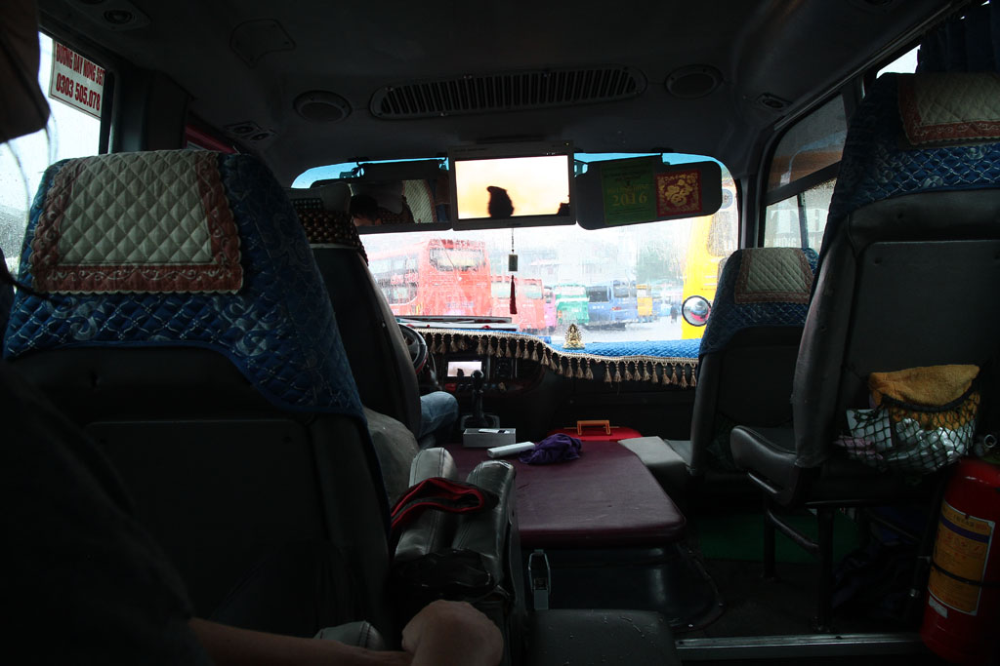
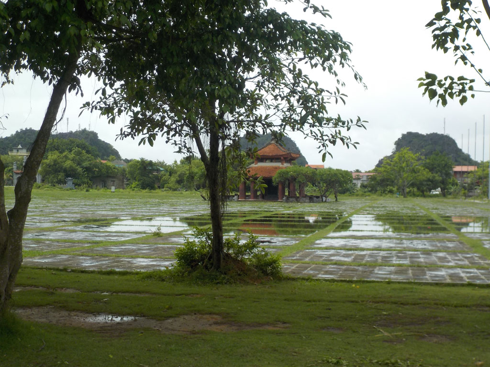
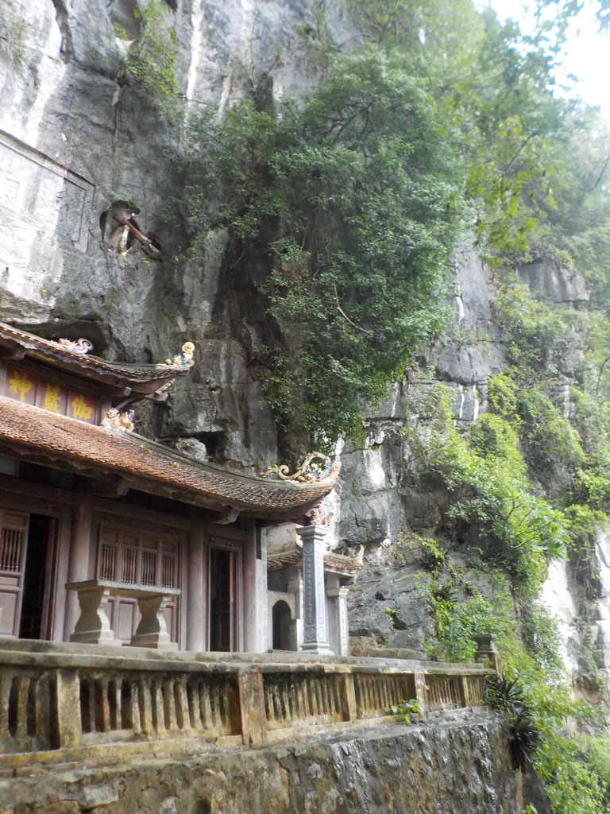
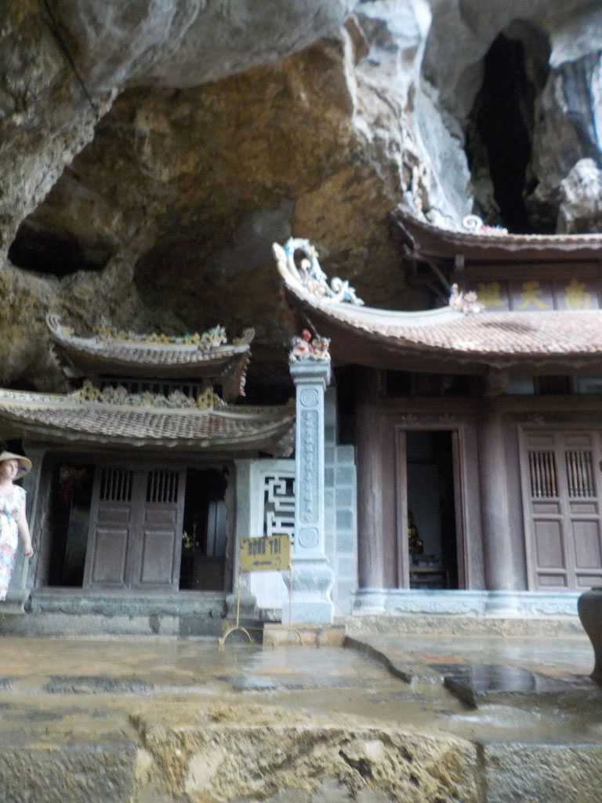
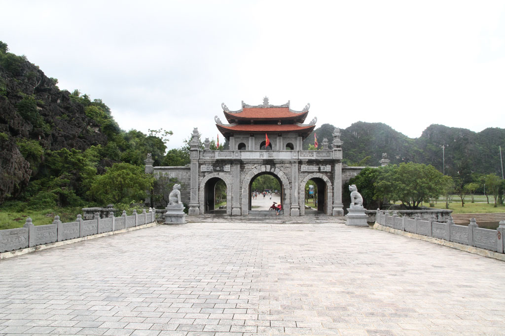
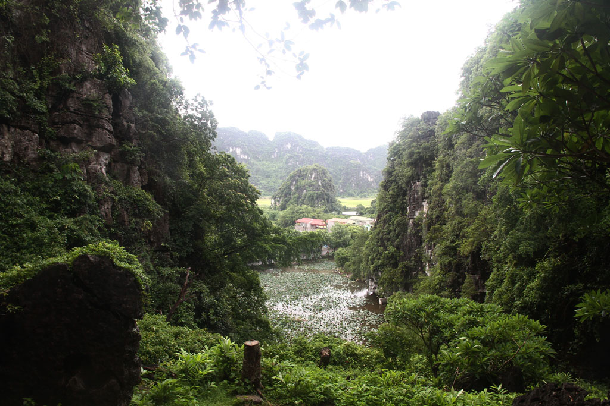
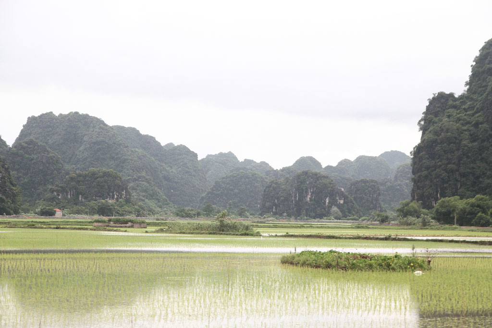
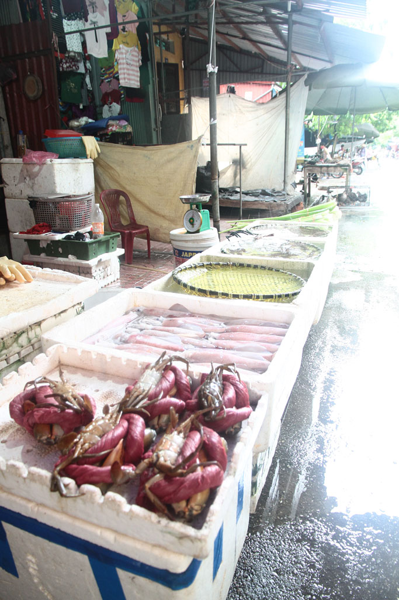
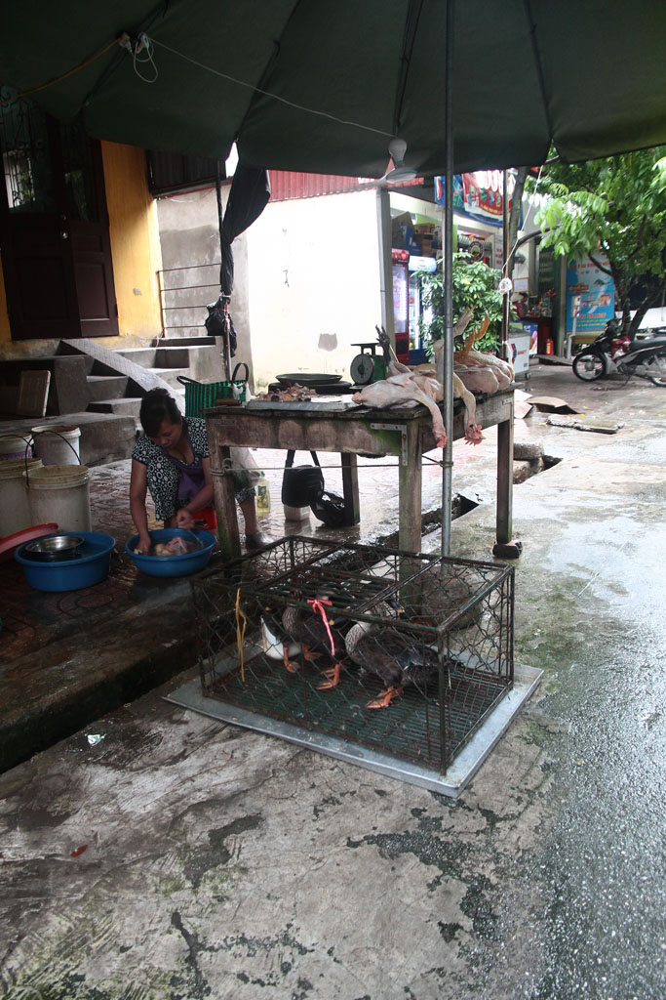

Vietnam / Ninh Binh

Nous prenons un taxi sous des trombes d’eau pour la gare routière de Giapbat d’Hanoï inondée. Les billets achetés au comptoir, nous pataugeons dans 20 cm d’eau pour rejoindre le bus qui nous emmène à Ninh Binh. Des tongs flottent ici et là.
Une fois arrivé nous prenons un taxi pour la guesthouse. On part de suite en balade, mais ne trouvons rien à manger. C’est le début de l’après midi, le marché est terminé. Du coup on prend un chauffeur après négociations pour aller visiter les alentours. Nous allons à Hoa Lu et à la pagode de Jade.






Nous revenons ensuite à la guesthouse, prendre une bière puis ensuite manger sur place. Un riz “végétarien” au poulet, du porc avec des nouilles, bières et sodas.


A la fin du repas, nous faisons un aller retour à la gare acheter des billets pour le lendemain.